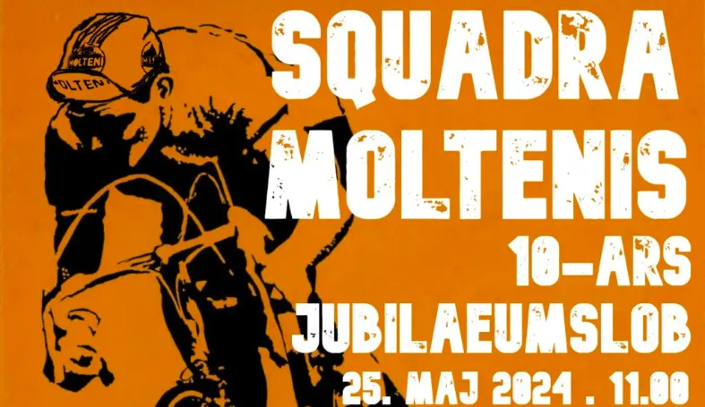

Tilmeldingen til 10-års jubilæumsløb er åben
Tilmeldingen til Squadra Moltenis 10-års jubilæumsløb er nu åben.

Vi stikker stadig i højre og venstre. Følg os på Facebook →
Tilmeldingen til Squadra Moltenis 10-års jubilæumsløb er nu åben.
